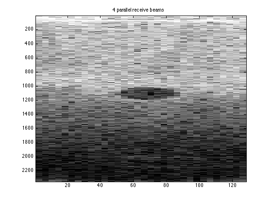

Contents
4 parallel receive
anecoicCyst_data=anecoicCyst.data(80:end,:,:); time=[0:1:size(anecoicCyst_data,1)-1]*(1/((anecoicCyst.samplingRateMHz)*(10^6))); timeArray=[0:1/(anecoicCyst.samplingRateMHz*(10^6)):(size(anecoicCyst_data,1)-1)/(anecoicCyst.samplingRateMHz*(10^6))]'; timeArray2=repmat(timeArray,[1,128]); for zz=1:length(anecoicCyst_data) zf(zz,1)=(time(zz)*1540)/2; end
+1/2 pitch
for yy=1:length(zf) for bb=-63.5:1:63.5 xe_cont_pos_1(yy,bb+64.5)=((anecoicCyst.elementSpacingMM)/1000)*bb; xf_pos_1(yy,bb+64.5)=xe_cont_pos_1(bb+64.5)*(.5)*((anecoicCyst.elementSpacingMM)/1000); diag_dist_cont_pos_1(yy,bb+64.5)=sqrt(zf(yy)^2 + (((xe_cont_pos_1(yy,bb+64.5))^2)-((xf_pos_1(yy,bb+64.5))^2))); time_diag_cont_pos_1(yy,bb+64.5)=diag_dist_cont_pos_1(yy,bb+64.5)/1540; end for bb=-63.5:1:63.5 time_delay_cont_pos_1(yy,bb+64.5)=time_diag_cont_pos_1(yy,bb+64.5)-time_diag_cont_pos_1(yy,65); end end for dd=1:length(timeArray) time_withDelays_cont_pos_1(dd,:)=timeArray2(dd,:)+time_delay_cont_pos_1(dd,:); end for hh=1:128 temp_cont_pos_1=interp1(timeArray2(:,hh),squeeze(anecoicCyst_data(:,hh,1:4:128)),time_withDelays_cont_pos_1(:,hh),'linear',0); reshaped_interp_cont_pos_1(:,hh,:)=reshape(temp_cont_pos_1,[2353,1,32]); end for jj=1:32 for kk=1:2353 zone_interp_cont_4_pos_1(kk,jj)=sum(reshaped_interp_cont_pos_1(kk,:,jj)); end end
four parallel receive
+3/2 pitch
for yy=1:length(zf) for bb=-63.5:1:63.5 xe_cont_pos_2(yy,bb+64.5)=((anecoicCyst.elementSpacingMM)/1000)*bb; xf_pos_2(yy,bb+64.5)=xe_cont_pos_2(bb+64.5)*(1.5)*((anecoicCyst.elementSpacingMM)/1000); diag_dist_cont_pos_2(yy,bb+64.5)=sqrt(zf(yy)^2 + (((xe_cont_pos_2(yy,bb+64.5))^2)-((xf_pos_2(yy,bb+64.5))^2))); time_diag_cont_pos_2(yy,bb+64.5)=diag_dist_cont_pos_2(yy,bb+64.5)/1540; end for bb=-63.5:1:63.5 time_delay_cont_pos_2(yy,bb+64.5)=time_diag_cont_pos_2(yy,bb+64.5)-time_diag_cont_pos_2(yy,65); end end for dd=1:length(timeArray) time_withDelays_cont_pos_2(dd,:)=timeArray2(dd,:)+time_delay_cont_pos_2(dd,:); end for hh=1:128 temp_cont_pos_2=interp1(timeArray2(:,hh),squeeze(anecoicCyst_data(:,hh,1:4:128)),time_withDelays_cont_pos_2(:,hh),'linear',0); reshaped_interp_cont_pos_2(:,hh,:)=reshape(temp_cont_pos_2,[2353,1,32]); end for jj=1:32 for kk=1:2353 zone_interp_cont_4_pos_2(kk,jj)=sum(reshaped_interp_cont_pos_2(kk,:,jj)); end end
four parallel receive
-1/2 pitch
for yy=1:length(zf) for bb=-63.5:1:63.5 xe_cont_neg_1(yy,bb+64.5)=((anecoicCyst.elementSpacingMM)/1000)*bb; xf_neg_1(yy,bb+64.5)=xe_cont_neg_1(bb+64.5)*(-.5)*((anecoicCyst.elementSpacingMM)/1000); diag_dist_cont_neg_1(yy,bb+64.5)=sqrt(zf(yy)^2 + (((xe_cont_neg_1(yy,bb+64.5))^2)-((xf_neg_1(yy,bb+64.5))^2))); time_diag_cont_neg_1(yy,bb+64.5)=diag_dist_cont_neg_1(yy,bb+64.5)/1540; end for bb=-63.5:1:63.5 time_delay_cont_neg_1(yy,bb+64.5)=time_diag_cont_neg_1(yy,bb+64.5)-time_diag_cont_neg_1(yy,65); end end for dd=1:length(timeArray) time_withDelays_cont_neg_1(dd,:)=timeArray2(dd,:)+time_delay_cont_neg_1(dd,:); end for hh=1:128 temp_cont_neg_1=interp1(timeArray2(:,hh),squeeze(anecoicCyst_data(:,hh,1:4:128)),time_withDelays_cont_neg_1(:,hh),'linear',0); reshaped_interp_cont_neg_1(:,hh,:)=reshape(temp_cont_neg_1,[2353,1,32]); end for jj=1:32 for kk=1:2353 zone_interp_cont_4_neg_1(kk,jj)=sum(reshaped_interp_cont_neg_1(kk,:,jj)); end end
four parallel receive
-3/2 pitch
for yy=1:length(zf) for bb=-63.5:1:63.5 xe_cont_neg_2(yy,bb+64.5)=((anecoicCyst.elementSpacingMM)/1000)*bb; xf_neg_2(yy,bb+64.5)=xe_cont_neg_2(bb+64.5)*(-1.5)*((anecoicCyst.elementSpacingMM)/1000); diag_dist_cont_neg_2(yy,bb+64.5)=sqrt(zf(yy)^2 + (((xe_cont_neg_2(yy,bb+64.5))^2)-((xf_neg_2(yy,bb+64.5))^2))); time_diag_cont_neg_2(yy,bb+64.5)=diag_dist_cont_neg_2(yy,bb+64.5)/1540; end for bb=-63.5:1:63.5 time_delay_cont_neg_2(yy,bb+64.5)=time_diag_cont_neg_2(yy,bb+64.5)-time_diag_cont_neg_2(yy,65); end end for dd=1:length(timeArray) time_withDelays_cont_neg_2(dd,:)=timeArray2(dd,:)+time_delay_cont_neg_2(dd,:); end for hh=1:128 temp_cont_neg_2=interp1(timeArray2(:,hh),squeeze(anecoicCyst_data(:,hh,1:4:128)),time_withDelays_cont_neg_2(:,hh),'linear',0); reshaped_interp_cont_neg_2(:,hh,:)=reshape(temp_cont_neg_2,[2353,1,32]); end for jj=1:32 for kk=1:2353 zone_interp_cont_4_neg_2(kk,jj)=sum(reshaped_interp_cont_neg_2(kk,:,jj)); end end
zone_interp_cont_4=zeros(2353,128); for mm=0:31 zone_interp_cont_4(:,4*mm+1)=zone_interp_cont_4_neg_2(:,mm+1); zone_interp_cont_4(:,4*mm+2)=zone_interp_cont_4_neg_1(:,mm+1); zone_interp_cont_4(:,4*mm+3)=zone_interp_cont_4_pos_1(:,mm+1); zone_interp_cont_4(:,4*mm+4)=zone_interp_cont_4_pos_2(:,mm+1); end figure; imagesc(20*log10(abs(hilbert(zone_interp_cont_4))),[30,80]) title('4 parallel receive beams') colormap('gray')